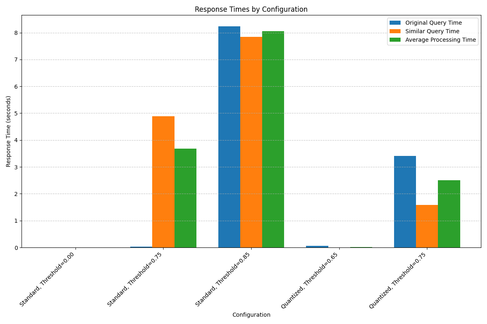
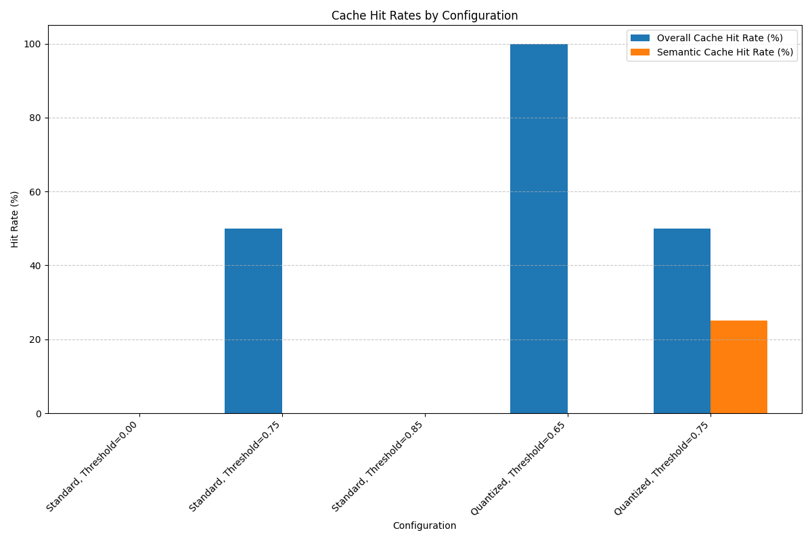
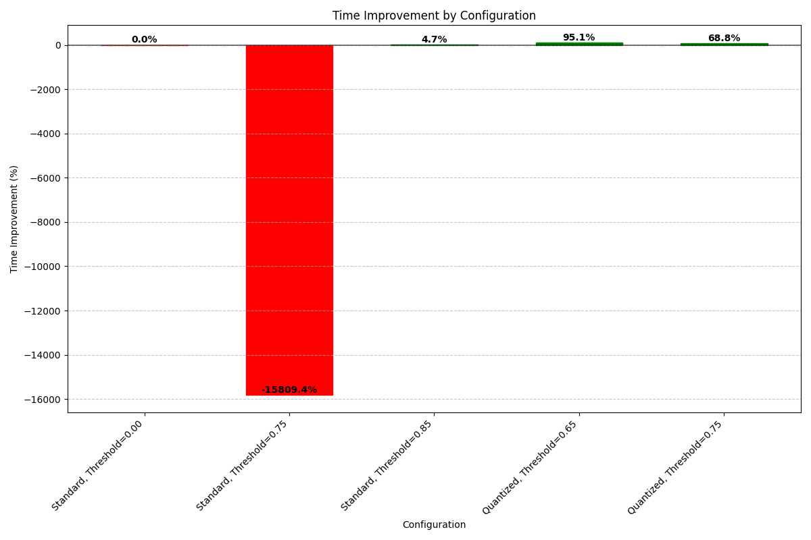

RAG System Performance Dashboard
Generated on 2025-05-25 17:52:27
Performance Summary
This dashboard shows the performance metrics for the RAG system with different configurations.
0.00s
Best Average Response Time
100.0%
Best Cache Hit Rate
95.1%
Best Time Improvement
0.00
Lowest Similarity Threshold
Response Times

Cache Hit Rates

Time Improvement

Detailed Results
| Configuration |
Avg. Processing Time (s) |
Cache Hit Rate (%) |
Semantic Cache Hit Rate (%) |
Time Improvement (%) |
| Standard, Threshold=0.00 |
0.00 |
0.0% |
0.0% |
0.0% |
| Standard, Threshold=0.75 |
3.67 |
50.0% |
0.0% |
-15809.4% |
| Standard, Threshold=0.85 |
8.05 |
0.0% |
0.0% |
4.7% |
| Quantized, Threshold=0.65 |
0.02 |
100.0% |
0.0% |
95.1% |
| Quantized, Threshold=0.75 |
2.50 |
50.0% |
25.0% |
68.8% |
Recommendations
- Use the quantized embedding model for better performance
- Lower the similarity threshold to increase semantic cache hit rates
- Monitor cache size and performance over time to optimize settings
RAG System Performance Dashboard - Cascade AI